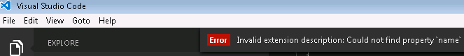

定制化Visual Studio Code(Customize Visual Studio Code)
You can customize VS Code to work the way you like to work. Here is a quick primer on some of the most common ways to configure VS Code. Navigate to the relevant sections to learn more.
您可以定制化 VS Code 来用您喜欢的方式工作。这里是一些最常见的配置VS Code方法的快速入门。跳转到到相关部分了解详情。
Tip: Several categories of customizations (Themes, Snippets, Language Support) can be shared in the VS Code Extension Marketplace. It's always a good idea to look there first.
提示： 可以在VS Code扩展市场中发布自己的定制主题（主题，代码段，语言支持等）。这是个好习惯，先看看那里。
定制主题(Customization Topics)
| Category | Scenario | Marketplace |
|---|---|---|
| User and Workspace settings | Configure settings for an individual workspace or all workspaces. Word-wrapping, linting options and much more. | No |
| Key Bindings | Review all key bindings and change them to suit your needs. | No |
| Tasks | Tasks are a great way to connect VS Code with your broader development workflow. | No |
| Themes | Add additional color themes to VS Code. | Yes |
| Basic Language Support | Add additional basic language support (colorization and bracket matching) to VS Code via a TextMate bundle. You can also associate more file extensions with an existing language. | Yes |
| Snippets | Add additional snippets to your favorite language | Yes |
| Language | Configure the display language | No |
| 类别 | 场景 | 扩展市场 |
|---|---|---|
| 用户和工作区设置 | 配置单个工作区或所有工作区的设置。Word-wrapping, linting options and much more. | 不支持 |
| 快捷键绑定 | 查看所有快捷键绑定，并根据您的需要更改它们。 | 不支持 |
| 主题 | 向VS Code添加其他颜色主题。 | 支持 |
| 基本语言支持 | 通过TextMate包添加额外的基本语言支持（代码高亮和括号匹配）到VS Code。您还可以将更多文件扩展名与现有语言相关联。 | 支持 |
| 用户定义代码段 | 在您喜欢的语言中添加其他代码段 | 支持 |
| 语言 | 配置显示语言 | 不支持 |
下一步(Next Steps)
Here are a few pointers to help you on your way...
下面几个要点可能在某些方面帮助你...
- Extension Marketplace - browse the extensions others have shared
- Yo Code - to generate a customization, then install it locally
Publishing Tool - use the vsce publishing tool to share your customization with others
扩展程序市场 - 浏览其他人共享的扩展程序
- Yo Code - 生成自定义，然后在本地安装
- 发布工具 - 使用vsce发布工具与他人共享您的自定义
Common Questions
Q: How can I make my customization get loaded into VS Code on start-up?
A: If you move a copy of your customization into your .vscode/extensions folder it will be loaded up as VS Code is started.
Q: What are the valid fields in the project.json (extension Manifest) file?
A: We have extended the package.json to include the required fields for customisation and extension loading/distribution. We have an overview of the optional and mandatory sections of the extension manifest available.
Q: Can a package.json contribute more than one customization?
A: Yes, the contributes attribute can take a comma delimited list of contribution types and, as you'll notice from the json above, each contribution type takes an array (e.g. "themes": [ ]).
Q: I created a new customization but I don't see it displayed in VS Code?
A: Make sure you have copied all of the generator's output files to a new folder under your .vscode/extensions folder (e.g. ".vscode/extensions/cooltheme") and that you have restarted VS Code after installing the customization.
On startup, if VS Code detects an issue with a customization, you will see an error message which can aid in debugging your customization.
